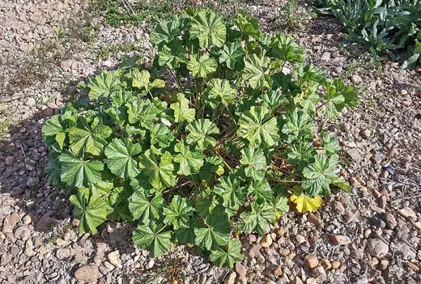

Wild food recipes from the UAE
15 dishes made with foraged ingredients, from drinks and preserves to mains and desserts.
Drinks
Starters & snacks
 Hummaid saladBladder dock
Hummaid saladBladder dock Purslane fattoushPurslane
Purslane fattoushPurslaneSauces, preserves & sides
 Date syrup (dibs)Dates
Date syrup (dibs)Dates Ghaf leaf saladGhaf leaves and pods
Ghaf leaf saladGhaf leaves and podsMain course
- Truffle saloonaDesert truffle

Khubbeiza (mallow stew)Mallow Wild greens with eggsGreen amaranth, Sow thistle, Nettle-leaved goosefoot
Wild greens with eggsGreen amaranth, Sow thistle, Nettle-leaved goosefoot
 Mesquite flour flatbreadMesquite pods
Mesquite flour flatbreadMesquite pods Sidr fruit snackSidr fruit
Sidr fruit snackSidr fruit